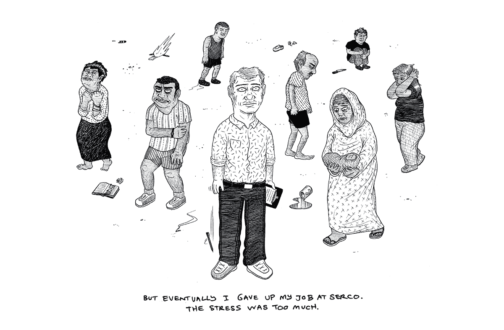
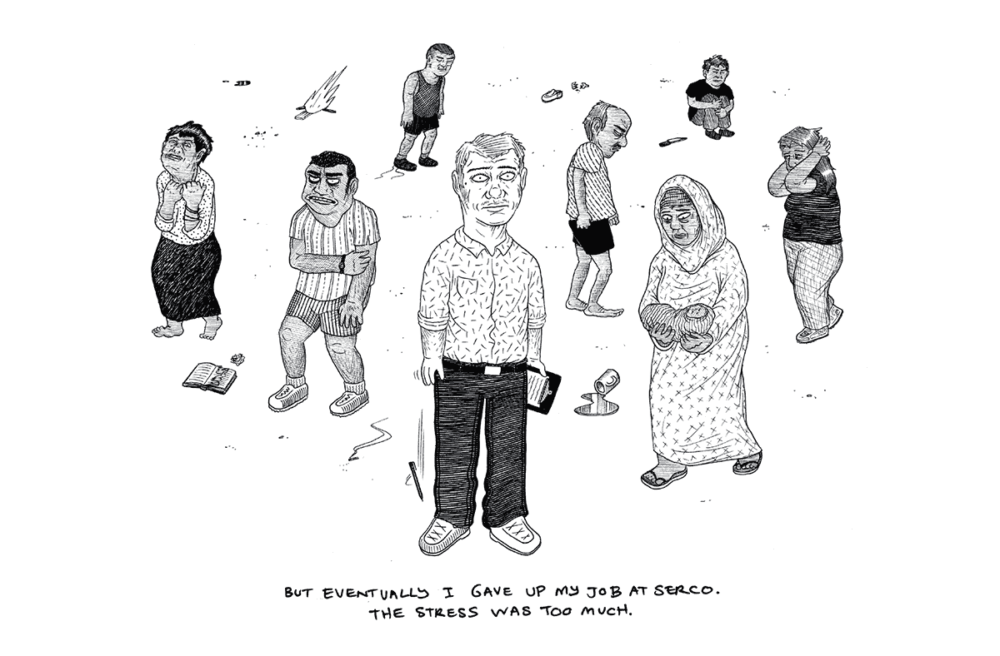

At Work Inside Our Detention Centres: A Guard's Story is a first-hand account of life inside an Australian immigration detention facility, told from the perspective of a former employee of Serco, the ubiquitous multinational service provider that runs the nation’s onshore centres. Read more about this project »


 
